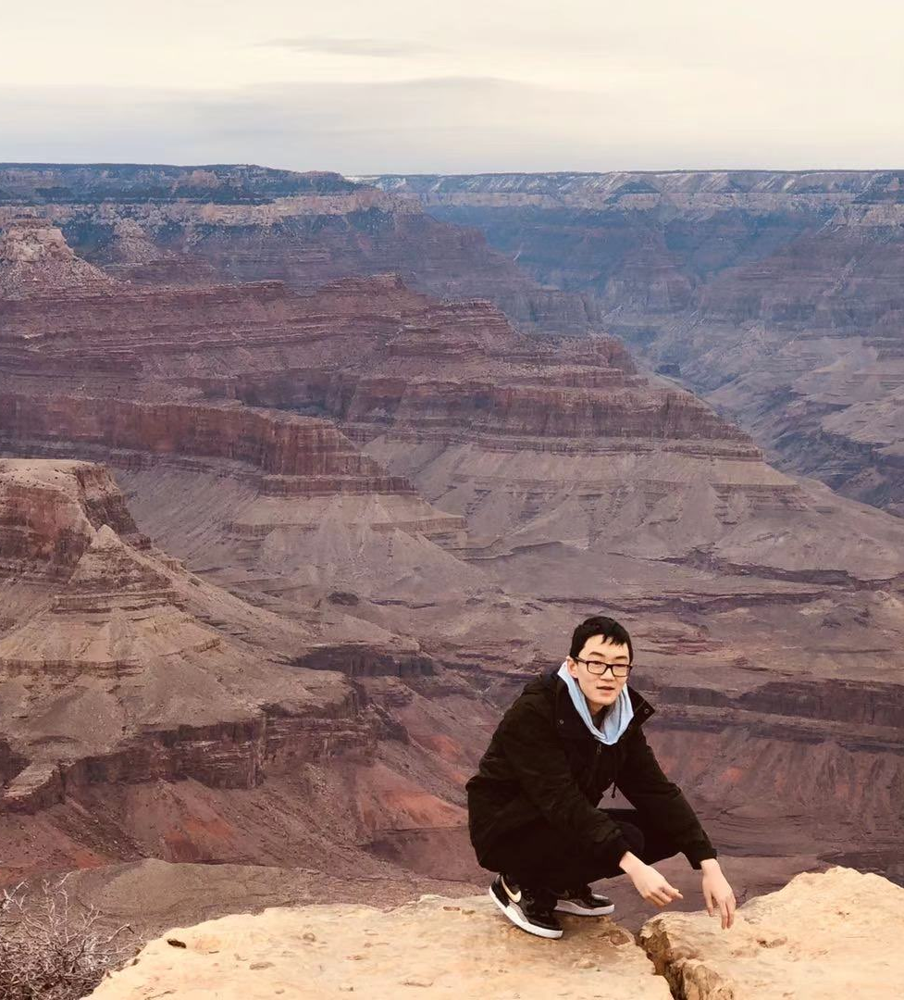

I'm Alex Fu.
I'm a first-year Double Degree student (CS/BBA) at the University of
Waterloo and Wilfrid Laurier University.
Scroll down to find out
more about me!

I'm a first-year Double Degree student (CS/BBA) at the University of
Waterloo and Wilfrid Laurier University.
Scroll down to find out
more about me!

Hi I'm Alex! I'm in my first year of my Computer Science and Business
Administration Double Degree at the University of Waterloo. I have a
passion for designing programs and using technology to solve problems.
My interest in coding has always been driven by a desire to create all
sorts of cool projects and bringing my ideas to life. In my spare time,
I love playing badminton, playing video games and travelling the world
(though it has been quite a difficulty these past two years). I've saved
tons of these experiences and memories which you can come look at!
Currently, I've been focusing on my studies at home and trying to a find
a co-op software developement job for the next term. This website is
still in it's early stages and will continue to be developed.